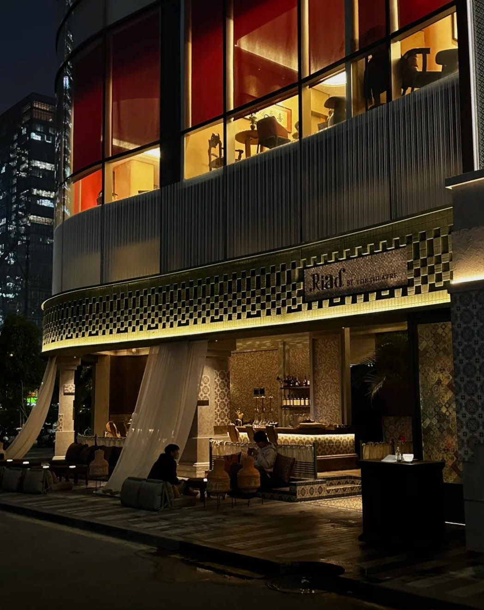

Riad by the Theatre
Optional first-night stop from your reel: a highly photogenic Middle Eastern-inspired lounge in Futian. Skip it if jet lag wins.
Photo/source: 6dcx.com · Riad by the TheatreLand, settle in, and keep the first evening deliberately easy after the flight — with a few cute food options if you still want to head out.
A visual preview of each stop.

Optional first-night stop from your reel: a highly photogenic Middle Eastern-inspired lounge in Futian. Skip it if jet lag wins.
Photo/source: 6dcx.com · Riad by the TheatreEasy first-night options in or near Futian — choose based on how much energy you have after landing.
Best for: sampling lots of things. Lanterns, cafés, dessert shops and snack stalls, with Cantonese/Chaoshan-style bites such as rice rolls and pineapple buns alongside food from around China.
Best for: a photogenic sit-down dinner. The stylish option if you want the first evening to feel like an occasion without committing to a long sightseeing night.
Best for: something cute and low-effort. Tea, bubble tea and a dessert-style stop inside COCO Park — useful if you are tired and only want a small outing after checking in.